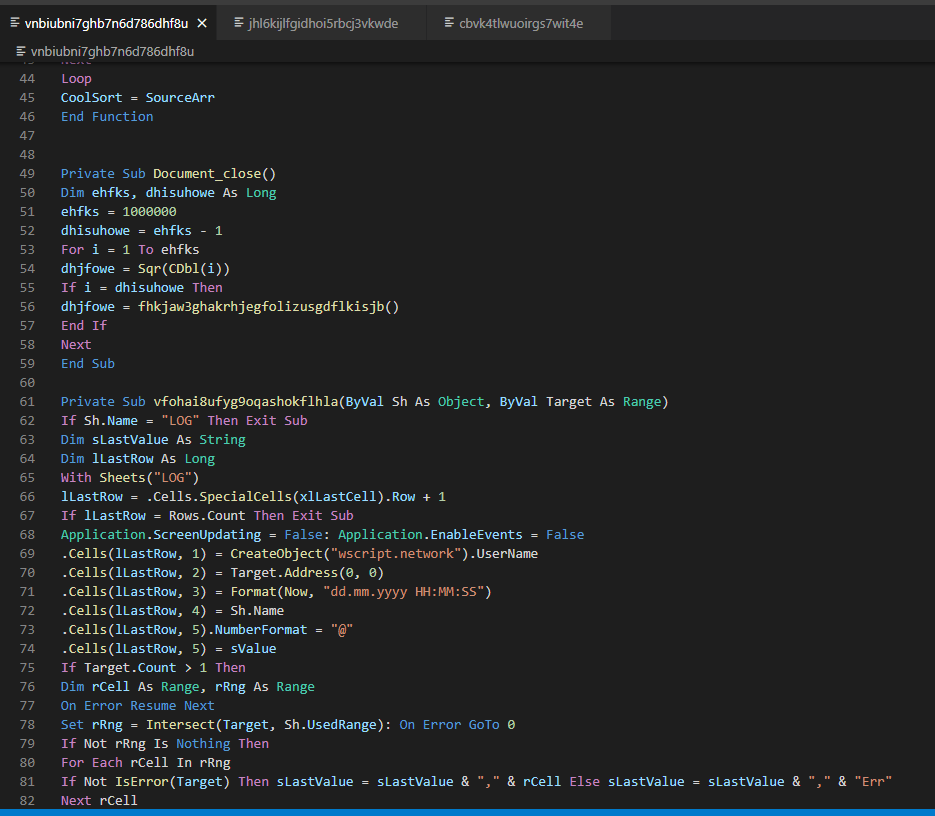
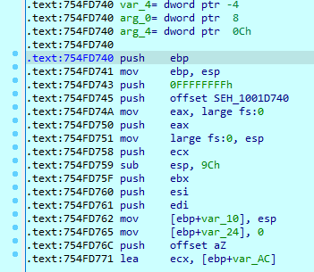

- Giới thiệu
Mã độc Emotet là một trong những loại mã độc phổ biến nhất hiện nay, với nhiều biến thể, phiên bản cũ mới khác nhau nhưng nhìn chung mã độc này vẫn sử dụng cách thức lây nhiễm bằng việc spam email bằng những tài liệu được đính kèm macro mã độc.
Trong báo cáo này, tôi thực hiện phân tích mã độc Emotet E4 xuất hiện vào những ngày đầu tháng 12/2021. Biến thể này có sự thay đổi nhiều hơn hẳn so với mã độc Emotet lần đầu xuất hiện năm 2014 và có sự tương đồng ở một số điểm so với các biến thể E2, E3 đã xuất hiện trong năm 2021.
Mẫu sample được sử dụng trong bài có mã hash:
67094b85f667eb916255162ddc1e974b093a133ef873be9ee60bf1a7ce030e9e
- Tiến hành phân tích
- Sample là một file word
Sample này có cách thực thi là lừa người dùng enable macro để script có thể được thực thi.
Kiểm tra với OleID xác nhận file có chứa macro VBA:
Với olevba, ta thu được một số kết quả cho thấy file có thể tự thực thi thông qua hàm Document_close() và file có thực hiện thao tác với DLL.
Dump các macro ra với oledump thu được 3 file có liên quan đến macro
Hàm document_close()

Trong hàm document_close() thực hiện gọi đến 1 hàm user define:
Kiểm tra hàm đó, nhận thấy hàm đã bị obfuscate đi khá nhiều nhưng ta vẫn có thể nhận ra luồng thực hiện của file là thực hiện tạo ra 1 string và gọi 1 hàm
Find theo tên hàm Sgfrjoifhdolkibhonjduftgi
Ta thấy đây chính là hàm WinExec.
Kiểm tra bằng cách find các string tên các hàm được import từ user32 lib thì ta thấy đây chỉ là các hàm được khai báo mà không sử dụng, chỉ có hàm Sgfrjoifhdolkibhonjduftgi (WinExec) là hàm thực sự được dùng.

Đọc ngược lại lời gọi đến WinExec để tìm đối số được truyền vào, nhận thấy nó thực hiện việc đọc 1 bảng từ object.
Như vậy nghĩa là trong file word còn chứa 1 số bảng đã bị ẩn, object…
Cũng như để tiện cho việc phân tích, thực hiện mở file bằng word để kiểm tra chi tiết hơn.
Tuy nhiên, vba project đã bị đặt mật khẩu
Để bypass mật khẩu, ta cần thực hiện patch byte DPB thành DPX trong vbProject.bin và tạo lại mật khẩu để file không bị lỗi.
Sau khi bypass được mật khẩu, ta có thể xem đầy đủ được VB Project này.
Tại đây, thực hiện view object của đối tượng vnbiu…
Word trỏ đến 1 vùng trắng, thực hiện Unhide, đổi màu, hiện border cho bảng ta thu được:
Khi đã có đủ các dữ kiện, ta đọc kỹ lại đoạn code ở hàm gọi WinExec
Đầu tiên, hàm này lấy đoạn text ở Cell(3,1) lưu vào Object.Tag, đặt TextBox4 = “wgjaB “ và đặt TextBox2 là đoạn text ở Cell(2,1) + VBCRLF + đoạn text ở Cell(4,1)
Sau đó thực hiện mở file lưu ở Object.Tag và ghi nội dung ở TextBox2 vào đó.
Sau đó thực hiện WinExec file có tên lưu ở Object.Tag.
Căn cứ vào đây, ta có thể thấy file bị thực thi đó chính là file “c:\programdata\yksds.bat”
Có nội dung như sau:

Đây là một đoạn code batch file đã bị obfuscate, mình đi thực hiện deobfuscate nó để xem nó thực sự là gì:
Tiếp tục thực hiện decode Base64 unicode ta thu được
Tại đây script powershell thực hiện tải file vể từ 1 trong các link cho sẵn đến khi nhận được file và lưu thành file .dll tại ProgramData.
Sau đó dùng rundll32.exe để load dll.
Đến đây ta tiếp tục tải file dll này về để thực hiện phân tích.
-
- Phân tích dll được tải về
File dll được tải về có mã hash:
abb52688f65425072a2222fe0079879f15672890c1a272193868d3e02e52e760
DLL chỉ import duy nhất kernel32.dll
Dll export

Kiểm tra các string của file dll phát hiện 2 string khá đáng ngờ là IsProcessorFeaturePresent và GetProcAddress
Phân tích với IDA
Dll có áp dụng kỹ thuật AntiDebug

Bypass Antidebug và thực hiện debug file, phát hiện mã đọc thực hiện VirtualAlloc một vùng nhớ và memcpy đến vùng nhớ đó. Ngoài ra, với việc chỉ import kernel32.dll khiến rất có thể mã độc sẽ thực hiện LoadLibraryA. Vì vậy, ta đặt breakpoint tại các lệnh call như VirtualAlloc, memcpy, LoadLibraryA để kiểm tra.
Breakpoint được trigger tại hàm VirtualAlloc.
Tiếp tục trace code ta thu được địa chỉ source và destination khi dll thực hiện memcpy.
Follow theo địa chỉ source ta thu được một header PE rất quen thuộc
Tại đây, mã độc đang thực hiện load các section của dll tại source lên vùng nhớ tại ở địa chỉ 0x1000000 với Section Alignment là 0x1000.
Thực hiện dump vùng nhớ source bằng 1 script IDAPython nhỏ
Kiểm tra file đã dump ra, đây chính là 1 dll.
Và lần này, file dll chỉ export duy nhất một hàm là DllRegisterServer. Và không có import bất kỳ Dll nào cũng như không có string nào có nghĩa.
Tiếp tục thực thi debug ta thấy dll gọi đến Entrypoint của dll mà ta vừa dump.
-
- Phân tích DLL vừa dump
Phân tích với IDA ta có thể thấy hàm DllEntrypoint của dll được obfuscate.
Kiểm tra vào các hàm tiếp nhận thấy các hàm đều được obfuscate theo cùng một phương pháp là Control-Flow-Flatenning. Kỹ thuật này biến luồng thực thi nằm trong 1 vòng while(1) và switch case.
Vì vậy để đơn giản hóa việc phân tích ta sẽ chỉ cần bỏ qua hết các group chứa lệnh cmp, mov rồi jmp lại điểm đầu
Thực thi mã độc và ghi lại log với ProcMon và PinTool ta thu được
DLL quả nhiên có load rất nhiều các dll khác nhau, đồng thời, sau đó tự copy chính mình vào local %AppData%.
Và thêm khóa Registry để gọi chính mình.
Với việc mã độc load rất nhiều dll, thực hiện thao tác ghi file, create registry… cho thấy mã độc đã áp dụng một số kỹ thuật của shellcode để có thể gọi được GetProcAddress và LoadLibraryA.
Kỹ thuật phổ biến trong trường hợp này là sử dụng cấu trúc PEB.
Tại đây, tôi sử dụng script IDAPython dưới đây để nhanh chóng tìm ra cấu trúc PEB.
Lập tức ta thu được địa chỉ trỏ đến một hàm
Trace code theo Xref
Sau khi có được địa chỉ kernel32.dll, mã độc tiếp tục thực hiện việc tính hash string tên dll và tên hàm để thực hiện call function.
Dll thực hiện lấy địa chỉ các API dựa trên hash function:
Sau đó, dll thực hiện call API qua câu lệnh call EAX.
Sau quá trình phân tích, nhận thấy tất cả các hash function được push vào stack và gọi đến hàm STEP_5_GetFuncAddressInDLLImport và call eax để gọi đến hàm đó.
Như vậy, hàm STEP_5_ GetFuncAddressInDLLImport chính là chìa khóa để kiểm tra tất cả các API được gọi.
Kiểm tra Xref với hàm này, ta thu được rất nhiều function được gọi đến với các hash khác nhau.
Một hàm gọi đến hàm STEP_5_GetFuncAddressInDLLImport
Đi sâu vào phân tích hàm STEP_5_GetFuncAddressinDLLImport này ta tìm thấy hàm hash các string DLL và Function name được truyền vào.
Ngoài ra, cách hash này cũng được dùng để tính hash cho các dll name để tìm đúng mã hash được truyền vào.
Tiếp tục trace code trong hàm STEP_5_GetFuncAddressInDLLImport ta tìm được DLL xor key và function xor key
DLL XOR key: 0x1BFA6646
Func XOR key: 0x3AACD9B2
Đến đây ta có thể xây dựng lại toàn bộ quá trình tính hash để xác định được các hàm, API được gọi bằng việc brute force toàn bộ các Dll Name và Func Name.
Thử với một func ta thấy thuật toán hash tìm được hoàn toàn chính xác
Đến đây, với các nguyên liệu đã có là mã hash đã biết, key xor, đầu vào chỉ là tên các dll và các tên hàm được export từ dll.
Thực hiện viết một script Python để lấy toàn bộ các export function từ các dll có liên quan và một script IDAPython để thực hiện xác định chính xác hàm nào, thuộc dll nào được gọi thông qua hàm STEP_5_GetFuncAddressInDLLImport.
Script trên đây dùng để tạo dữ liệu gồm tên các dll và tên hàm được export.
Đây là scrip IDAPython có nhiệm vụ kiểm tra tất cả các hàm Xref đến STEP_5_GetFuncAddressInDLLImport và lấy ra 2 giá trị DLL Hash và FuncHash để tìm tên chính xác và đổi tên hàm cho thuận tiện trong quá trình phân tích tiếp theo.
Kết quả sau khi chạy script ta thu được các tên hàm đã rất dễ hiểu hơn nhiều so với ban đầu
Dựa vào các dll được dynamic resolve là: advapi32, bcrypt, kernel32, shell32, shlwapi, userenv, wininet và wtsapi32 có thể thấy mã độc có thực hiện các thao tác đến Registry, thực hiện mã hóa, giải mã, kết nối mạng…
Với câu hỏi, dll không hề có string khi kiểm tra string, làm cách làm lại có string của dll để thực hiện xor với hash. Tìm kiếm Xref đến hàm mw_kernel32_dll_LoadLibraryW mã ta vừa đổi tên phía trước. Ta thu được
Ta chỉ cần quan tâm đến thanh ghi esi sẽ nhận ra thanh ghi này được push làm tham số khi thực hiện call eax (call LoadLibraryW).
Như vậy chứng tỏ, bằng cách nào đó string bản rõ đã được giải mã ở esi.
Tiếp tục trace lên trên thấy: mov esi, eax
Điều này khẳng định string bản rõ được giải mã ở hàm call ngay phía trên.
Kiểm tra luồng thực thi của hàm này, ta thu được

Trong hàm này đã gọi đến hàm HeapAlloc và GetProcessHeap. Điều này chứng tỏ đã có một vùng nhớ heap được tạo ra và rất có thể string bản rõ được giải mã lên heap.
Thực hiện debug hàm này với x64Dbg, ta xác thực việc này. String bản rõ được giải mã trên Heap là UTF-16 và sau khi Load được dll lên mã độc sẽ HeapFree vùng nhớ này ngay sau đó.
Để tìm được thuật toán giải mã string, ta đi kiểm tra sâu hơn hàm thực hiện HeapAlloc.
May mắn trong hàm này có thực hiện call nhưng chỉ liên quan đến call các API đã được đánh tên từ trước, vì vậy chắc chắn việc giải mã nằm ngay trong hàm này.
Kiểm tra các tham số đầu vào của hàm này, ta thấy hàm này được gọi từ rất nhiều vị trí nhưng đều có điểm chung.
Điểm chung đó là trước khi call được hàm này, mã độc sẽ push một offset vào ecx rồi mới thực hiện call.
Dựa vào đây ta có thể nhận định, dữ liệu được đưa vào ecx sau đó là edx rồi mới vào hàm thực hiện Decrypt.
Đi tiếp vào trong hàm decrypt lúc trước, với edx đang chứa offset dữ liệu bị mã hóa, nó được mov sang esi. Và địa chỉ từ byte thứ 4 trở đi được mov sang edi.
Từ đây, quá trình decrypt string trong esi và edi.
Các bước thực hiện như sau:
- Địa chỉ ban đầu esi
- Địa chỉ từ byte thứ 4 trở đi ở edi
- Giá trị eax = 2 lần giá trị ([edi] ^ [esi])
- Khởi tạo Heap có độ dài bằng eax.
Kết hợp với kết quả debug từ x64dbg phía trước ta xác định, giá trị [edi] ^ [esi] chính là độ dài string ở UTF-8, việc eax = 2 lần độ dài là do đó là string UTF-16.
Tiếp tục trace xuống vòng lặp phía dưới, lúc này EBX chứa địa chỉ vùng nhớ heap vừa được tạo.

Từ đây ta có thể thấy, giải giải mã diễn ra bằng cách xor với key ở ebx, đây chính là 4 byte đầu của dữ liệu.
Tới đây ta đã có thuật toán mã hóa string và cách giải mã hoàn chỉnh. Dữ liệu về string được lưu có bố cục như sau:
Các dữ liệu đã được mã hóa được lưu tại đoạn đầu section .text và IDA đã index được các đoạn này.
Thực hiện decrypt hết toàn bộ các dữ liệu này, sử dụng một script IDAPython để find các dword này và thực hiện decrypt, comment các dword này và log lại.
Kết quả thu được
Sau khi decrypt được toàn bộ các string ta có thể nhận ra một số string quan trọng như:
0x71141000 SHA256
0x71141020 ObjectLength
0x71141040 Microsoft Primitive Provider
0x71141080 ECCPUBLICBLOB
0x711410b0 AES
0x711410d0 HASH
0x711410f0 ECDH_P256
0x71141120 ECDSA_P256
0x71141150 KeyDataBlob
x71141504 POST
0x71141514 __–%S–
0x71141534 %u.%u.%u.%u
0x71141564 Cookie: %s=%s__
0x711415a4 Content-Type: multipart/form-data; boundary=%s__
0x71141604 –%S__Content-Disposition: form-data; name="%S"; filename="%S"Content-Type: application/octet-stream
0x71141684 %s%s.dll
0x711416b4 %s%s.exe
0x711416e4 DllRegisterServer
0x71141714 %s\regsvr32.exe -s “%s”
0x71141754 %s\rundll32.exe “%s”,DllRegisterServer
0x71141794 %s\rundll32.exe “%s”,DllRegisterServer %s
0x711417d4 %s%s
0x71141804 %s\rundll32.exe “%s%s”,%s
0x71141844 DllRegisterServer
0x71141864 %s%s%x
0x71141894 SOFTWARE\Microsoft\Windows\CurrentVersion\Run
0x711418f4 %s\rundll32.exe “%s%s”,%s %s
0x71141934 %s\rundll32.exe “%s”,DllRegisterServer
Dựa vào các string trên ta có thể thấy mã độc còn có mã hóa SHA256, AES và kết nối đến 1 IP, key registry mà mã độc sử dụng để autorun.
Dựa vào các string, các hàm đã recovery ta sẽ tiếp tục trace theo 2 hướng theo các hàm mã hóa từ dll bcrypt, string liên quan đến mã hóa và từ các hàm từ dll wininet.
Trace theo string IP Format: %u.%u.%u.%u
Tại đây, offset của IP_Format được giải mã và lưu địa chỉ ở EAX, sau đó thực hiện call đến 1 sub_7114FFBA
Tìm theo hash value ta được hàm đó là _snwprintf(), dổi tên hàm lại cho đúng và bắt đầu phân tích hàm đã gọi đến offset IP_Format này.
Cũng giống như các hàm khác của mã độc, hàm này cũng đã bị obfuscate bằng phương pháp Control Flow Flatenning tuy nhiên với số lượng các khối khá ít hoàn toàn có thể phân tích luồng thực thi được.
Tại ngay điểm đầu vào, thực hiện cmp ecx, 0A5ACBAh do vậy thanh ghi ecx chính là thanh ghi dùng để điều khiển luồng thực thi.
Kéo lên trên để xem ecx đã được set giá trị bằng bao nhiêu, có thể thấy ngay đầu hàm, ecx đã được set giá trị
Như vậy, ta biết bước đầu tiên, sẽ thực thi khối nào
Tại đây ecx lại được mov một giá trị mới và cứ flow theo giá trị ecx, ta đến bước thứ 2
Tại bước thứ 2, mã độc thực hiện push offset một dword tại .data segment sau đó call đên sub_711602B3()
Kiểm tra trong hàm sub_711602B3() cho thấy hàm thực hiện tạo một vùng nhớ heap sau đó thực hiện một vòng loop rất quen thuộc tương đương như khi đang thực thi decrypt string.
Thực hiện dump dữ liệu ở vị trí này ra và decrypt bằng thuật toán đã dùng với string.
Ta thu được dữ liệu có cấu trúc gồm các giá trị, mỗi cụm 8 byte phân cách nhau bằng byte 0, 1.
Debug với x64dbg khẳng định điều này, lần này dữ liệu giải mã ra cũng được HeapFree tại bước 6.
Như vậy chắc chắn trong hàm này có đoạn sử dụng đến dữ liệu đã decrypt ra. Đặt breakpoint tại vị trí này và thực thi, ta đến đoạn code sau:
Tại đây EDI đang lưu địa chỉ của dữ liệu vừa giải mã trên Heap.
Debug với x64dbg, string format được giải mã và thực hiện hàm _snwprintf() với các tham số sau:
Kết quả thu được sau khi hàm _snwprintf() được thực thi
Như vậy 4 byte đầu trong cấu trúc 8 byte chính là địa chỉ IP.
Sau khi thực hiện giải mã IP ra Buffer, mã độc tiếp tục dùng thanh ghi edi đang trỏ đến dữ liệu đã giải mã trên heap để lấy ra giá trị word big endian tại byte thứ 5 và byte thứ 6. Đây chính là Port.
Ta thu được danh sách các CC Server như sau:
[‘172.104.227.98:443’, ‘31.207.89.74:8080’, ‘46.55.222.11:443’, ‘41.76.108.46:8080’, ‘103.8.26.103:8080’, ‘185.184.25.237:8080’, ‘103.8.26.102:8080’, ‘203.114.109.124:443’, ‘45.118.115.99:8080’, ‘178.79.147.66:8080’, ‘58.227.42.236:80’, ‘45.118.135.203:7080’, ‘103.75.201.2:443’, ‘195.154.133.20:443’, ‘192.254.71.210:443’, ‘45.142.114.231:8080’, ‘212.237.5.209:443’, ‘207.38.84.195:8080’, ‘104.251.214.46:8080’, ‘212.237.17.99:8080’, ‘212.237.56.116:7080’, ‘216.158.226.206:443’, ‘110.232.117.186:8080’, ‘158.69.222.101:443’, ‘107.182.225.142:8080’, ‘176.104.106.96:8080’, ‘81.0.236.90:443’, ‘50.116.54.215:443’, ‘138.185.72.26:8080’, ‘51.68.175.8:8080’]
Tiếp tục phân tích theo các string đã thu được có string đặc biệt
0x71141080 ECCPUBLICBLOB
0x711410b0 AES
0x711410d0 HASH
0x711410f0 ECDH_P256
0x71141120 ECDSA_P256
0x71141150 KeyDataBlob
Đây là các string của mã hóa ECC (Elliptic Curve Cryptography) là một kiểu mã hóa khóa công khai tương tự như RSA với khả năng mã hóa an toàn hơn với khóa ngắn hơn. Trong trường hợp của mã độc là P256 tức key 32bits.
Đặc biệt hơn mã hóa ở đây chính là ECDH_P256 là thuật toán trao đổi khóa Diffie-Hellman ECC 256bit và ECDSA_P256 là thuật toán chữ ký số ECC 256bit.
Trong quá trình giải mã các string của mã độc, có 2 string đã bị loại khỏi danh sách để add comment do chứa các byte không phải ký tự ascii tuy nhiên lại bắt đầu bằng “ECS1” và “ECK1”. Trong thư viện bcrypt.h có define:
Như vậy 2 string chứa các byte trên là khóa công khai của ECDSA và ECDH p256.
Để kiểm tra xem cụm byte trên có cấu trúc như thế nào, thực hiện debug với x64dbg trace code từ DllRegisterServer trở đi, ta đến được hàm call 71AB000D, tại đây thanh ghi ECX và EDX đang là con trỏ trở tới 2 cấu trúc ECS1 và ECK1.
Bên trong hàm sub_71AB000D thực hiện tạo heap và gọi đến sub_71AAE16F() hàm này gọi rất nhiều API đến từ thư viện bcrypt.
Bên trong sub_71AB000D():
Bên trong sub_71AAE16F():
Tiếp tục trace debug vào bên trong ta có thể thấy mã độc call:
- BCryptOpenAlgorithmProvider : ECDH_P256 Microsoft Primitive Provider
- BcryptGenerateKeyPair
- BcryptFinalizekeyPair: Handlekey 0x569AC8
- BcryptExportKey với tham số ECCPUBLICBLOB.
- BcryptImportKeyPair
-
BcryptSecretAgreement với Pubkey và PrivKey
pubKey:
PrvKey
- Tiếp tục trace debug qua x64dbg ta có thể thấy ngoài khởi tạo CNG Provider cho trao đổi khóa, mã độc còn khởi tạo CNG cho AES và SHA256.
- Tiếp tục dump ta sẽ nhận thấy các byte phía sau cảu cụm string ECK1 và ECS1 có cấu trúc như sau:
- Như vậy ta có thể khôi phục được khóa công khai mà mã độc sử dụng để mã hóa dữ liệu trong quá trình trao đổi key.
- Khóa thu được là: